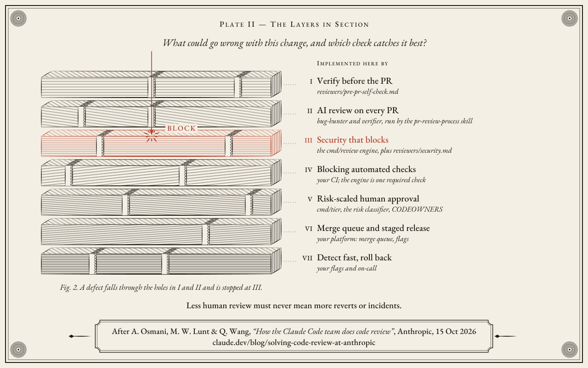
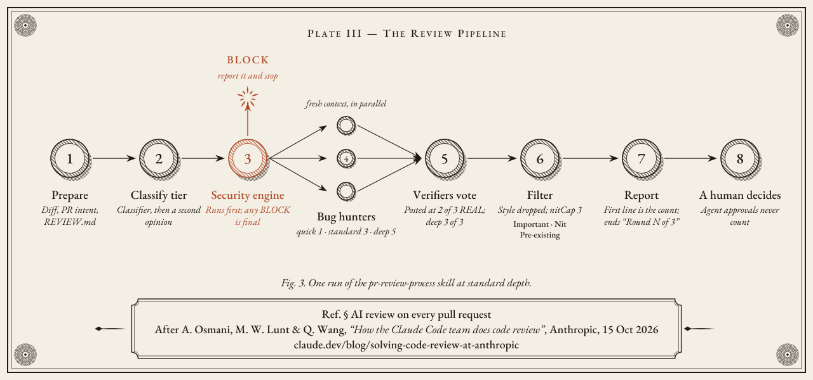
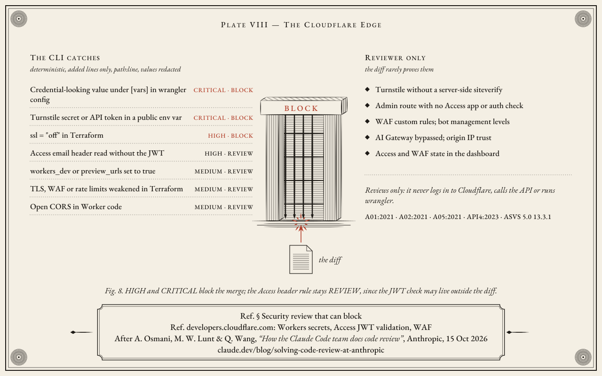
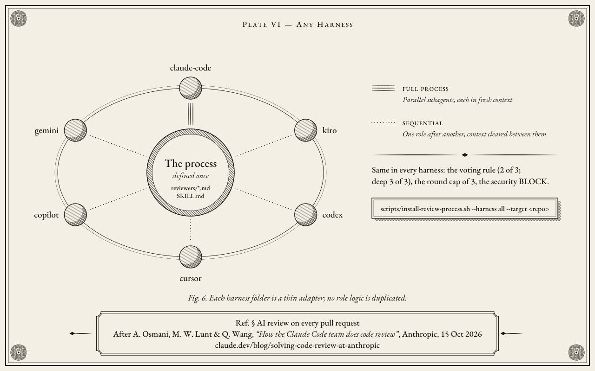

Seven layers of code review, for any agent harness
AI Code Review turns the process the Claude Code team at Anthropic described in How the Claude Code team does code review (15 October 2026) into files you install: reviewer roles, a risk-tier classifier, GitHub workflows and adapters for six agent harnesses. Layer III is a deterministic Go engine that blocks the merge on security findings.
Independent implementation · not affiliated with or endorsed by Anthropic.
The review process
No single check catches everything. Each layer has holes, so the process stacks seven of them and scales human attention to risk. The question for each change is not who reviews it, but what could go wrong with it and which check catches that best.

| # | Layer | Implemented here by |
|---|---|---|
| I | Verify before the PR | reviewers/pre-pr-self-check.md: tests and lint with their output, then a fresh-context review of the diff |
| II | AI review on every PR | pr-review-process skill with the bug-hunter and verifier roles |
| III | Security that blocks | The deterministic engine cmd/review and reviewers/security.md |
| IV | Blocking automated checks | Your CI; the engine is one required check. The PR template asks how it was tested and how to undo it. |
| V | Risk-scaled human approval | cmd/tier and reviewers/risk-classifier.md: low 0, medium 1, high 2 human approvals |
| VI | Merge queue and staged release | Your platform: merge queue, flags, staged rollout |
| VII | Detect fast, roll back | Your flags and on-call; each incident becomes a case in bench/ |
The guardrail for the whole process: less human review must never mean more reverts or incidents. The full write-up is in process/00-seven-layers.en.md.
Layer II: AI review on every pull request

pr-review-process skill at standard depth.The security engine runs first, and any BLOCK is final. Bug hunters then read the diff against the whole repo and the PR's stated intent, each in fresh context: one at quick depth, three at standard, five at deep. Verifiers vote on every candidate; a finding is posted when two of three agree (three of three at deep). Style and cleanup-only findings are dropped, nits are capped at three, and every finding is labelled Important, Nit or Pre-existing. A human decides; agent approvals never count.
Review stops after three rounds, each one re-reviewing only what changed, and then asks the author to reconsider the approach: convergence.
Layer III: the security engine
A deterministic Go CLI reads a pull-request diff and blocks the merge when it finds an exploitable security problem. It uses no LLM and no network, and it stays silent unless it has a path:line as evidence. HIGH and CRITICAL findings are BLOCK and the process exits with code 1.
From a checkout, go run ./cmd/review security/examples/sample-pr.diff exits 1 and prints:
Decision: DO NOT MERGE
Reason: AuthZ/IDOR at src/api/orders.ts:36 (ASVS-5.0-8.2.2)
Finding: Hardcoded credential in source
Class: Secret in source
Evidence: config/app.ts:14
CWE: CWE-798
OWASP: A02:2021, ASVS-5.0-13.3.1
Severity: CRITICAL
Action: BLOCK
Decision: DO NOT MERGE
Finding: Missing object-level authorization
Class: AuthZ/IDOR
Evidence: src/api/orders.ts:36
CWE: CWE-639
OWASP: A01:2021, API1:2023, ASVS-5.0-8.2.2
Severity: HIGH
Action: BLOCK
Decision: DO NOT MERGE
Finding: Overly permissive CORS origin
Class: CORS misconfiguration
Evidence: src/server.ts:8
CWE: CWE-942
OWASP: A05:2021, ASVS-5.0-3.4.2
Severity: MEDIUM
Action: REVIEWWhat it catches
| Class | CWE | OWASP and ASVS IDs | Action |
|---|---|---|---|
| AuthZ / IDOR | CWE-639 | A01:2021, API1:2023, ASVS-5.0-8.2.2 | BLOCK |
| Hardcoded secret | CWE-798 | A02:2021, ASVS-5.0-13.3.1 | BLOCK |
| Permissive CORS | CWE-942 | A05:2021, ASVS-5.0-3.4.2 | REVIEW |
| Cross-site scripting | CWE-79 | A03:2021, ASVS-5.0-1.3.1 | BLOCK |
| Server-side request forgery | CWE-918 | A10:2021, ASVS-5.0-1.3.6 | BLOCK / REVIEW |
| Supply chain | CWE-829, CWE-1104 | A08:2021 + ASVS-5.0-15.2.4; A06:2021 + ASVS-5.0-15.1.2 | BLOCK / REVIEW |
| SQL injection | CWE-89 | A03:2021, ASVS-5.0-1.2.4 | BLOCK / REVIEW |
| OS command injection | CWE-78 | A03:2021, ASVS-5.0-1.2.5 | BLOCK / REVIEW |
| Path traversal | CWE-22 | A01:2021, ASVS-5.0-5.3.2 | BLOCK |
| Cloudflare configuration | CWE-798, CWE-290, CWE-288, CWE-319, CWE-693, CWE-770, CWE-799 | A05:2021, plus A01:2021, A02:2021 or API4:2023 by rule; credentials A02:2021, ASVS-5.0-13.3.1 | BLOCK / REVIEW |
| Prompt injection in the diff | CWE-1427 | ASI01:2026, AST05 | BLOCK |
Per-rule details and examples are on the rules page. Detection is pattern-based on changed lines: a pull-request smoke test, not a full audit.
Cloudflare edge review

The engine checks Workers and zone settings that arrive as code: a credential under [vars] in wrangler config, a Turnstile secret or API token in a public env var, ssl = "off" in Terraform, an Access identity header read without the JWT, and weakened TLS, WAF or rate limits. The cloudflare-config skill adds what the diff rarely proves, such as Turnstile without a server-side siteverify. It reviews only: it never logs in to Cloudflare, calls the API or runs wrangler.
Any harness

The process is defined once, in reviewers/*.md and the pr-review-process skill. Claude Code runs the hunters as parallel subagents in fresh context. Kiro, Codex, Cursor, GitHub Copilot and Gemini CLI run the roles one after another and clear context between them. The voting rule, the round cap of three and the security BLOCK are the same everywhere.
scripts/install-review-process.sh --harness all --target ../your-repo --dry-run
scripts/install-review-process.sh --harness claude-code --target ../your-repoIt never overwrites a file unless you pass --force. On Windows, use scripts/install-review-process.ps1. What each harness can and cannot do: harness/README.en.md.
Frequently asked questions
Is this Anthropic's tool?
No. It follows the process the Claude Code team at Anthropic described in a public post, and it is an independent implementation, not affiliated with or endorsed by Anthropic.
Does the security engine use an LLM?
No. It is deterministic Go: no model, no network call, no API key. The same diff always produces the same findings and the same exit code.
Can a comment in the diff talk it out of blocking?
No. The diff is treated as untrusted data. Instruction-shaped text is itself a finding and does not cancel any other BLOCK.
Can I run it in CI?
Yes. The GitHub Action uploads SARIF to Code Scanning and fails on BLOCK, or run review --git --from <base> --to HEAD in any CI and let exit code 1 fail the job.
Sources and credits
- Review process: Addy Osmani, Morgan Westlee Lunt and Qing Wang, How the Claude Code team does code review, Anthropic, 15 October 2026. This project is an independent implementation, not affiliated with or endorsed by Anthropic.
- Security IDs: OWASP Top 10:2021, OWASP API Security Top 10:2023 and OWASP ASVS 5.0.
- Cloudflare features the rules check: developers.cloudflare.com on Workers secrets, Access JWT validation and WAF.
- Plates: engraved for this project and set in EB Garamond (SIL Open Font License 1.1). Sources and alt text:
docs/art.